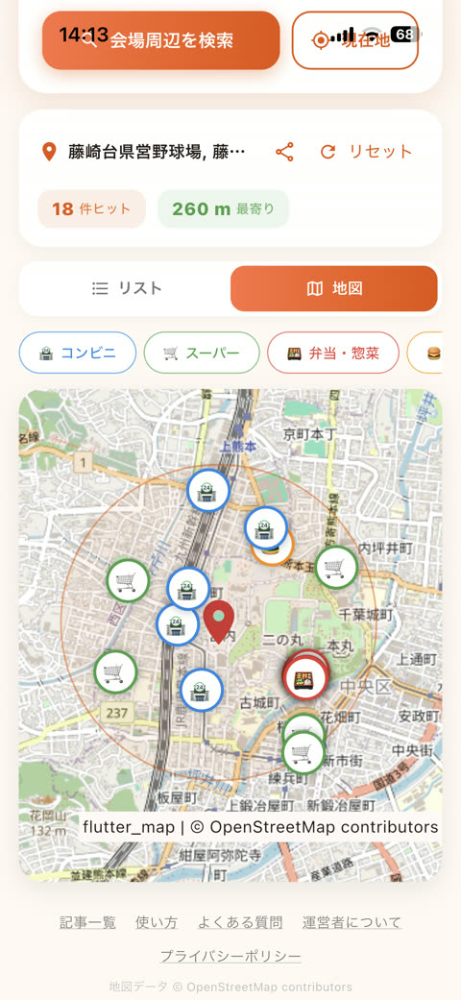
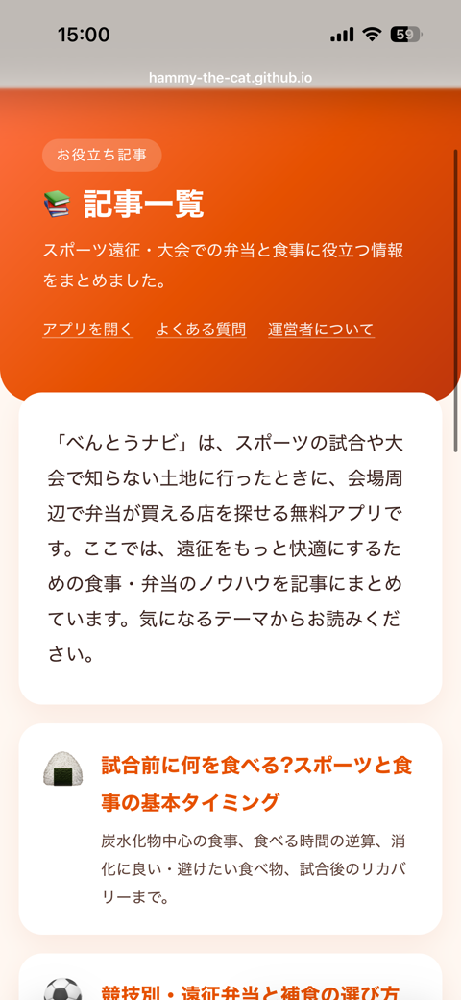
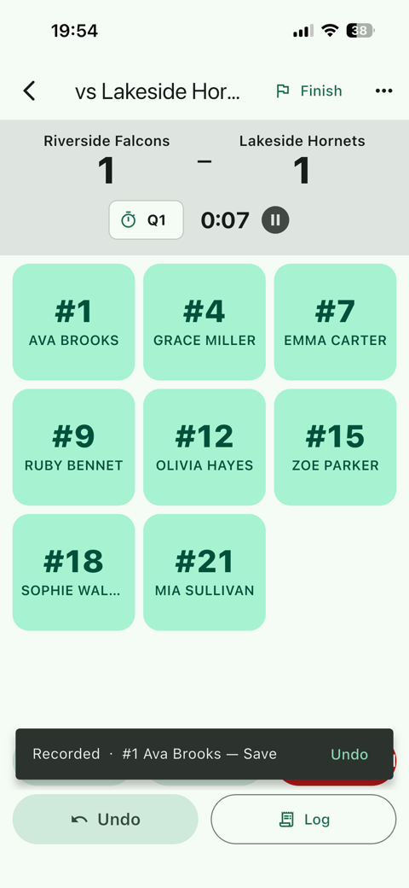
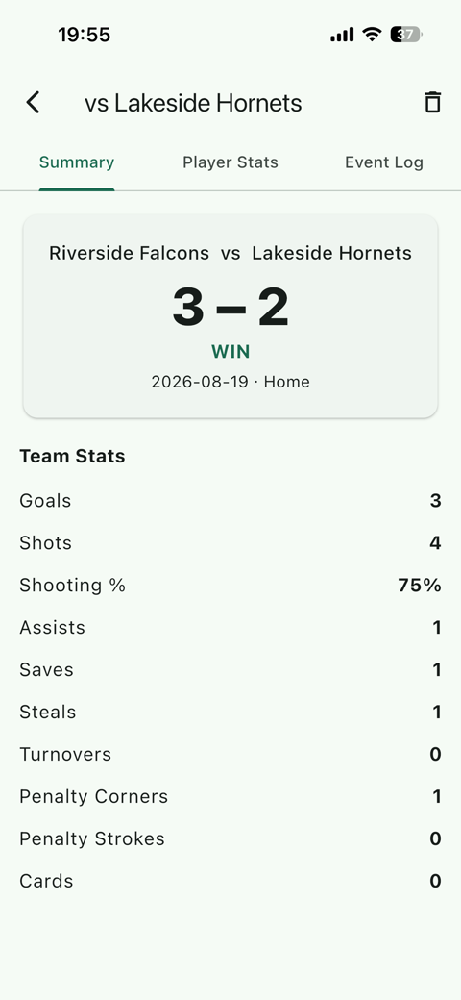
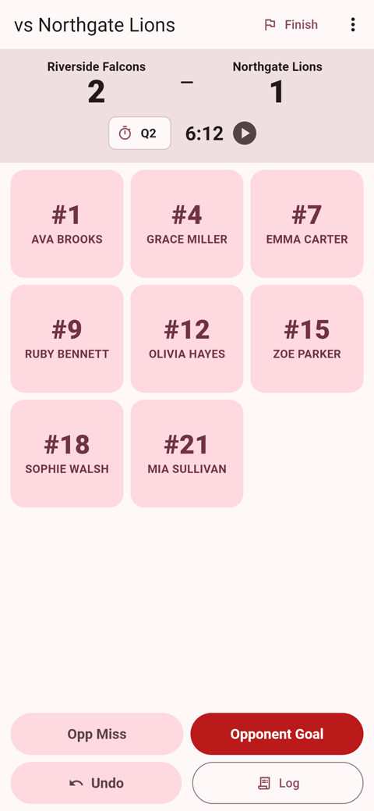
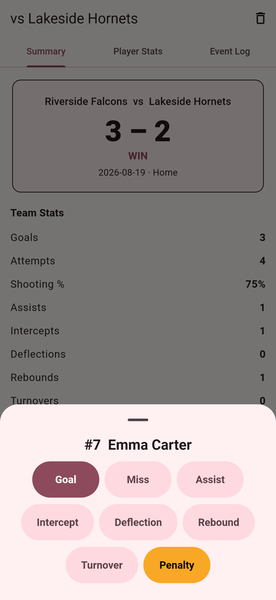

Pitch Chart
Pitching Record & Analysis
App Store 公開中
¥100 買い切り
オフライン動作
部活動・クラブチームのための、野球の配球記録・分析iPhoneアプリ。ベンチからタップするだけで、1球ごとの球種・コース・結果を記録できます。
- 捕手視点のストライクゾーンをタップして1球を素早く記録
- アウト・走者・得点は自動更新。三振も押し出しも本塁打もおまかせ
- 左右打者別・走者状況別のケース分析で配球のクセが見える
- 試合振り返りPDF・配球傾向PDFをその場で共有
- データは端末内に保存。チーム単位のバックアップにも対応


べんとうナビ
Bento Finder for Away Games
App Store 公開中
無料
全国対応
スポーツの遠征や大会で、初めて訪れる会場。「お弁当、どこで買えばいいんだろう？」——そんなときのためのアプリです。
- 「県総合運動公園 宮崎」のように会場名を入れるだけで検索
- すでに会場にいるなら、現在地からワンタップ
- コンビニ・スーパー・地元の弁当店を距離順に、徒歩の目安つきで
- 地図表示とチーム共有にも対応


Field Hockey Stats
Fastest Field Hockey Stat Tracker
App Store 公開中
無料・世界配信
iPhone / iPad
フィールドホッケーのスタッツを最速で記録するiPhone/iPadアプリ。試合を見ながら「選手→イベント」の2タップで記録でき、スコア・スタッツ・試合ログはすべて1本のイベント列から自動で導かれます。
- 試合中の操作は2タップだけ。選手を選んで、イベントを選んで、終わり
- ゴール・シュート・セーブ・ペナルティコーナーなど、ホッケー専用のイベント設計
- スコアと個人・チームスタッツは自動集計。Undoしても数字がズレない
- ログイン不要・完全オフライン。電波のないグラウンドでも動く
- iPadの横画面ではライブログを並べて表示


Netball Stats
Fastest Netball Stat Tracker
App Store 公開中
無料・世界配信
iPhone / iPad
ネットボールのスタッツをコートサイドで最速記録するiPhone/iPadアプリ。「選手→イベント」の2タップで、ゴール・ミス・インターセプトなどを試合を見ながら記録できます。
- 試合中の操作は2タップだけ。選手を選んで、イベントを選んで、終わり
- ゴール・ミス・アシスト・インターセプト・ディフレクション・リバウンドなど、ネットボール専用のイベント設計
- GS〜GKの7ポジションと4クォーター制に対応
- シュート成功率と個人・チームスタッツは自動集計
- ログイン不要・完全オフライン。コートサイドでそのまま使える

